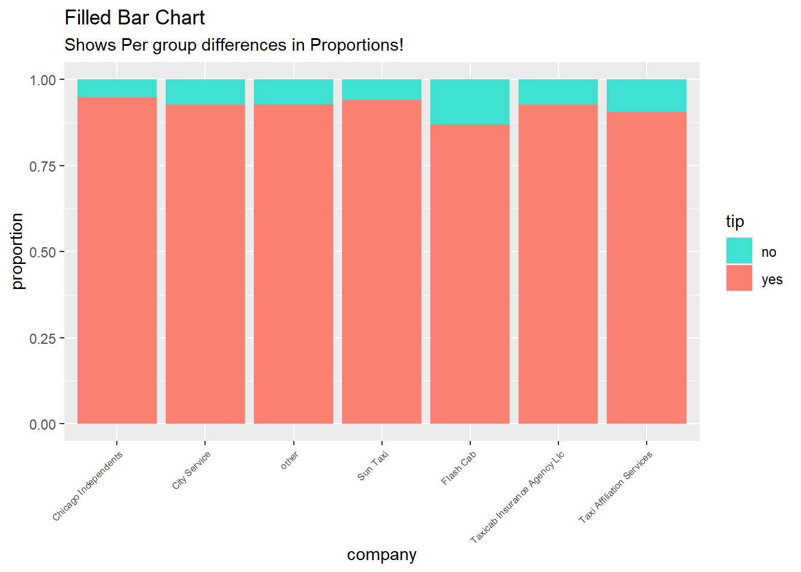
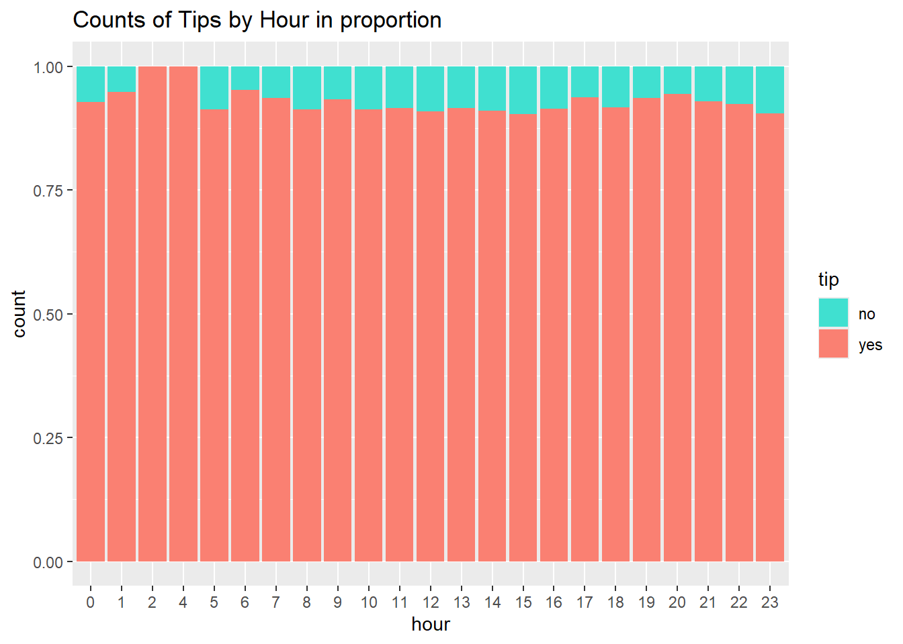
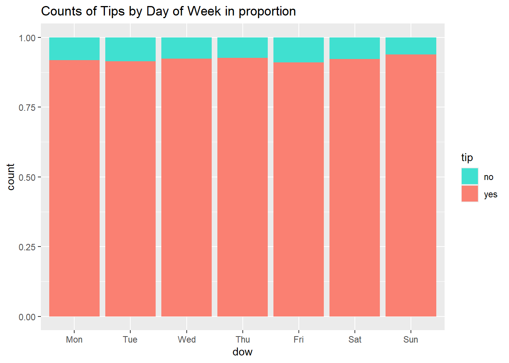
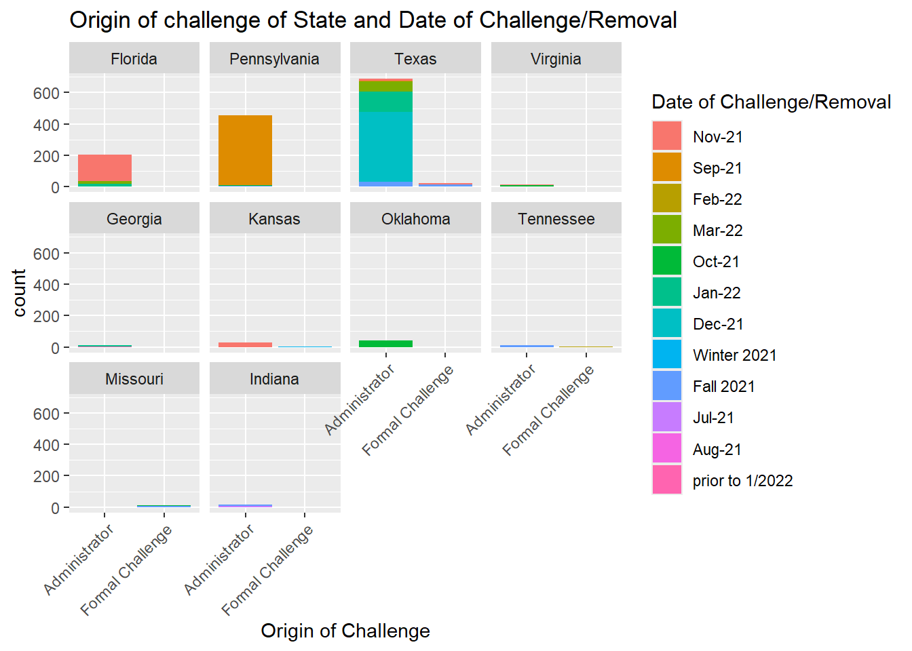

Today we worked on count of qualitative data. We also looked in creation of bar graph - data in lengths.
library(tidyverse)
── Attaching core tidyverse packages ──────────────────────── tidyverse 2.0.0 ──
✔ dplyr 1.1.4 ✔ readr 2.1.5
✔ forcats 1.0.0 ✔ stringr 1.5.1
✔ ggplot2 3.5.1 ✔ tibble 3.2.1
✔ lubridate 1.9.3 ✔ tidyr 1.3.1
✔ purrr 1.0.2
── Conflicts ────────────────────────────────────────── tidyverse_conflicts() ──
✖ dplyr::filter() masks stats::filter()
✖ dplyr::lag() masks stats::lag()
ℹ Use the conflicted package (<http://conflicted.r-lib.org/>) to force all conflicts to become errors
library(mosaic)
Registered S3 method overwritten by 'mosaic':
method from
fortify.SpatialPolygonsDataFrame ggplot2
The 'mosaic' package masks several functions from core packages in order to add
additional features. The original behavior of these functions should not be affected by this.
Attaching package: 'mosaic'
The following object is masked from 'package:Matrix':
mean
The following objects are masked from 'package:dplyr':
count, do, tally
The following object is masked from 'package:purrr':
cross
The following object is masked from 'package:ggplot2':
stat
The following objects are masked from 'package:stats':
binom.test, cor, cor.test, cov, fivenum, IQR, median, prop.test,
quantile, sd, t.test, var
The following objects are masked from 'package:base':
max, mean, min, prod, range, sample, sum
library(ggformula)library(skimr)
Attaching package: 'skimr'
The following object is masked from 'package:mosaic':
n_missing
Rows: 10000 Columns: 8
── Column specification ────────────────────────────────────────────────────────
Delimiter: ","
chr (5): tip, company, local, dow, month
dbl (3): rownames, distance, hour
ℹ Use `spec()` to retrieve the full column specification for this data.
ℹ Specify the column types or set `show_col_types = FALSE` to quiet this message.
taxi
# A tibble: 10,000 × 8
rownames tip distance company local dow month hour
<dbl> <chr> <dbl> <chr> <chr> <chr> <chr> <dbl>
1 1 yes 17.2 Chicago Independents no Thu Feb 16
2 2 yes 0.88 City Service yes Thu Mar 8
3 3 yes 18.1 other no Mon Feb 18
4 4 yes 20.7 Chicago Independents no Mon Apr 8
5 5 yes 12.2 Chicago Independents no Sun Mar 21
6 6 yes 0.94 Sun Taxi yes Sat Apr 23
7 7 yes 17.5 Flash Cab no Fri Mar 12
8 8 yes 17.7 other no Sun Jan 6
9 9 yes 1.85 Taxicab Insurance Agency Llc no Fri Apr 12
10 10 yes 1.47 City Service no Tue Mar 14
# ℹ 9,990 more rows
We first glimpse it to identify what variables need to be converted to factors.
Before we do mutate stuff into factors, it helps to know the number of levels of each variable, just to make sure. For do inspect and skim.
taxi %>% mosaic::inspect()
categorical variables:
name class levels n missing
1 tip character 2 10000 0
2 company character 7 10000 0
3 local character 2 10000 0
4 dow character 7 10000 0
5 month character 4 10000 0
distribution
1 yes (92.1%), no (7.9%)
2 other (27.1%) ...
3 no (81.2%), yes (18.8%)
4 Thu (19.6%), Wed (17.5%), Tue (16.3%) ...
5 Apr (31.8%), Mar (31.4%), Feb (20.4%) ...
quantitative variables:
name class min Q1 median Q3 max mean
1 rownames numeric 1 2500.75 5000.50 7500.2500 10000.0 5000.500000
2 distance numeric 0 0.94 1.78 15.5625 42.3 6.224144
3 hour numeric 0 11.00 15.00 18.0000 23.0 14.177300
sd n missing
1 2886.895680 10000 0
2 7.381397 10000 0
3 4.359904 10000 0
taxi %>% skimr::skim()
Data summary
Name
Piped data
Number of rows
10000
Number of columns
8
_______________________
Column type frequency:
character
5
numeric
3
________________________
Group variables
None
Variable type: character
skim_variable
n_missing
complete_rate
min
max
empty
n_unique
whitespace
tip
0
1
2
3
0
2
0
company
0
1
5
28
0
7
0
local
0
1
2
3
0
2
0
dow
0
1
3
3
0
7
0
month
0
1
3
3
0
4
0
Variable type: numeric
skim_variable
n_missing
complete_rate
mean
sd
p0
p25
p50
p75
p100
hist
rownames
0
1
5000.50
2886.90
1
2500.75
5000.50
7500.25
10000.0
▇▇▇▇▇
distance
0
1
6.22
7.38
0
0.94
1.78
15.56
42.3
▇▁▂▁▁
hour
0
1
14.18
4.36
0
11.00
15.00
18.00
23.0
▁▃▅▇▃
Variable name
Description
Type of variable
tip
Represents if the tip was given or not
Qualitative
company
This variable indicates the taxi company or vendor that operates the vehicle.
Qualitative
local
This variable may refer to whether the trip occurred within a local area or not
Qualitative
dow
his variable represents the day of the week when the taxi ride took place
Qualitative
month
This variable indicates the month during which the taxi ride occurred.
Qualitative
distance
This variable measures the total distance traveled during the taxi ride, usually expressed in miles
Quantitative
hour
This variable indicates the hour of the day when the trip started
Rows: 10,000
Columns: 8
$ rownames <dbl> 1, 2, 3, 4, 5, 6, 7, 8, 9, 10, 11, 12, 13, 14, 15, 16, 17, 18…
$ tip <ord> yes, yes, yes, yes, yes, yes, yes, yes, yes, yes, yes, yes, y…
$ distance <dbl> 17.19, 0.88, 18.11, 20.70, 12.23, 0.94, 17.47, 17.67, 1.85, 1…
$ company <fct> Chicago Independents, City Service, other, Chicago Independen…
$ local <ord> no, yes, no, no, no, yes, no, no, no, no, no, no, no, yes, no…
$ dow <ord> Thu, Thu, Mon, Mon, Sun, Sat, Fri, Sun, Fri, Tue, Tue, Sun, W…
$ month <ord> Feb, Mar, Feb, Apr, Mar, Apr, Mar, Jan, Apr, Mar, Mar, Apr, A…
$ hour <fct> 16, 8, 18, 8, 21, 23, 12, 6, 12, 14, 18, 11, 12, 19, 17, 13, …
q1. Do more people tip than not?
gf_bar(~tip, data = taxi_modified) %>%gf_labs(title ="Counts of Tips")
Look that that! A vast majority of the lot, are people who tip!
q2. Does the tip depend upon whether the trip is local or not?
In a dodged bar chart one variable is in the x- axis, but the y axis has the count of another variable. In this way we acquire counts of different levels of a qualitative data broken down by levels of another qualitative variable side by side, making it easy to compare.
taxi_modified %>%gf_bar(~local,fill =~tip,position ="dodge" ) %>%gf_labs(title ="Dodged Bar Chart" ,subtitle ="Proof that i know how to write subtitles")%>%gf_refine(scale_fill_manual(values =c("turquoise", "salmon")))
A stacked bar looks very similar to a dodged chart, but counts of both levels are on top of each other. I like this one better, it looks neater, but in my opinion if the counts of multiple levels of one paramter are closeby values, it would be more practical to use a dodged bar.
taxi_modified %>%gf_bar(~local,fill =~tip,position ="stack" ) %>%gf_labs(title ="Stacked Bar Chart",subtitle ="A sandwiched version of the last one!" )%>%gf_refine(scale_fill_manual(values =c("turquoise", "salmon")))
Looking at these, while we can spot the number of tips and lack of tips the locals and non-locals contributed- there are a lot more non local tips than local ones and in quantity, they do get most of their tips from non-locals.
But we can’t definitely say that non-locals tend to tip more certainly, it could only appear so beacuse the non-local trips are so much more. To find this, we will have to find the difference in ratios by using position = fill.
taxi_modified %>%gf_bar(~local,fill =~tip,position ="fill" ) %>%gf_labs(title ="Filled Bar Chart",subtitle ="Shows Per group differences in Proportions!" )%>%gf_refine(scale_fill_manual(values =c("turquoise", "salmon")))
We can now observe that locals tend to tip lesser than the non-locals.
q3. Do some cab companies get more tips than others?
taxi_modified %>%gf_bar(~company, fill =~tip, position ="dodge") %>%gf_labs(title ="Dodged Bar Chart") %>%gf_theme(theme(axis.text.x =element_text(size =6, angle =45, hjust =1)))%>%gf_refine(scale_fill_manual(values =c("turquoise", "salmon")))
Other gets the most count of trips but do they get the most number of tips in ratio?
taxi_modified %>%gf_props(~company, fill =~tip, position ="fill") %>%gf_labs(title ="Filled Bar Chart",subtitle ="Shows Per group differences in Proportions!" ) %>%gf_theme(theme(axis.text.x =element_text(size =6, angle =45, hjust =1)))%>%gf_refine(scale_fill_manual(values =c("turquoise", "salmon")))

It appears so that flash cabs is the company that gets the least amount of tips. While Chicago gets the most number of tips per-group proportion.
q4. Does a tip depend upon the hour of the day? At which are are the tips highest and lowest?
gf_bar(~hour, fill =~tip, data = taxi_modified) %>%gf_labs(title ="Counts of Tips by Hour")%>%gf_refine(scale_fill_manual(values =c("turquoise", "salmon")))
The count of tips are highest are the 17th hour while lowest is at the 4th hour.
gf_bar(~hour, fill =~tip, position ="fill", data = taxi_modified) %>%gf_labs(title ="Counts of Tips by Hour in proportion")%>%gf_refine(scale_fill_manual(values =c("turquoise", "salmon")))

People are most likely to tip at 2nd and 4th hour and least at 8th, 15th and 23rd hour.
q5. Does a tip depend upon the day of the week? At which day are the tips highest and lowest?
gf_bar(~dow, fill =~tip, data = taxi_modified) %>%gf_labs(title ="Counts of Tips by Day of Week")%>%gf_refine(scale_fill_manual(values =c("turquoise", "salmon")))
The highest count of tips are on Thursdays and lowest is on Sundays. The count of tips thend to be the highest in weekdays and lesser in weekends
gf_bar(~dow, fill =~tip, data = taxi_modified, position ="fill") %>%gf_labs(title ="Counts of Tips by Day of Week in proportion")%>%gf_refine(scale_fill_manual(values =c("turquoise", "salmon")))

People are most likely to tip on Sundays and least likely to tip on Fridays.
q6. At which month are the tips highest and lowest among the 4 recorded?
gf_bar(~month, fill =~tip, data = taxi_modified) %>%gf_labs(title ="Counts of Tips by Month")%>%gf_refine(scale_fill_manual(values =c("turquoise", "salmon")))
The highest count of tips is on April and lowest is on January.
gf_bar(~month, fill =~tip, data = taxi_modified, position ="fill") %>%gf_labs(title ="Counts of Tips by Month in proportion")%>%gf_refine(scale_fill_manual(values =c("turquoise", "salmon")))
People are least likely to tip in April and most likely to tip in January.
Counts of Tips by Day of Week and Month
Here, we are obtaining a total 7 graphs, each for a day week. Each graph has 4 bars each, with month as the x axis indicating- for each day, in what month, the count of tips is observed.
gf_bar(~ month | dow, fill =~tip, data = taxi_modified) %>%gf_labs(title ="Counts of Tips by Day of Week and Month")%>%gf_refine(scale_fill_manual(values =c("turquoise", "salmon")))
Counts of Tips by Hour and Day of Week
gf_bar(~ hour | dow, fill =~tip, data = taxi_modified) %>%gf_labs(title ="Counts of Tips by Hour and Day of Week" )%>%gf_refine(scale_fill_manual(values =c("turquoise", "salmon")))
Addiction healthcare data-set
data("HELPrct")
Obtaining the count of of each substance
HELPrct %>%gf_bar(~substance)
Based on this data, more people are addicted to alcohol than cocaine or heroin.
Rows: 1586 Columns: 7
── Column specification ────────────────────────────────────────────────────────
Delimiter: ","
chr (7): Author, Title, Type of Ban, State, District, Date of Challenge/Remo...
ℹ Use `spec()` to retrieve the full column specification for this data.
ℹ Specify the column types or set `show_col_types = FALSE` to quiet this message.
banned
# A tibble: 1,586 × 7
Author Title `Type of Ban` State District Date of Challenge/Re…¹
<chr> <chr> <chr> <chr> <chr> <chr>
1 Àbíké-Íyímídé, Far… Ace … Banned from … Flor… Indian … Nov-21
2 Acevedo, Elizabeth Clap… Banned from … Penn… Central… Sep-21
3 Acevedo, Elizabeth The … Banned from … Flor… Indian … Nov-21
4 Acevedo, Elizabeth The … Banned from … New … Marlbor… Feb-22
5 Acevedo, Elizabeth The … Banned Pendi… Texas Frederi… Mar-22
6 Acevedo, Elizabeth The … Banned Pendi… Virg… New Ken… Oct-21
7 Aciman, André Call… Banned Pendi… Virg… Spotsly… Nov-21
8 Acito, Marc How … Banned Pendi… Flor… Indian … Nov-21
9 Adeyoha, Koja 47,0… Banned from … Penn… Central… Sep-21
10 Adichie, Chimamand… Half… Banned from … Mich… Hudsonv… Jan-22
# ℹ 1,576 more rows
# ℹ abbreviated name: ¹`Date of Challenge/Removal`
# ℹ 1 more variable: `Origin of Challenge` <chr>
banned %>% dplyr::glimpse()
Rows: 1,586
Columns: 7
$ Author <chr> "Àbíké-Íyímídé, Faridah", "Acevedo, Elizab…
$ Title <chr> "Ace of Spades", "Clap When You Land", "Th…
$ `Type of Ban` <chr> "Banned from Libraries and Classrooms", "B…
$ State <chr> "Florida", "Pennsylvania", "Florida", "New…
$ District <chr> "Indian River County School", "Central Yor…
$ `Date of Challenge/Removal` <chr> "Nov-21", "Sep-21", "Nov-21", "Feb-22", "M…
$ `Origin of Challenge` <chr> "Administrator", "Administrator", "Adminis…
banned %>% mosaic::inspect()
categorical variables:
name class levels n missing
1 Author character 797 1586 0
2 Title character 1145 1586 0
3 Type of Ban character 4 1586 0
4 State character 26 1586 0
5 District character 86 1586 0
6 Date of Challenge/Removal character 12 1586 0
7 Origin of Challenge character 2 1586 0
distribution
1 Kobabe, Maia (1.9%) ...
2 Gender Queer: A Memoir (1.9%) ...
3 Banned Pending Investigation (46.1%) ...
4 Texas (45%), Pennsylvania (28.8%) ...
5 Central York (27.8%) ...
6 Sep-21 (28.8%), Dec-21 (28.3%) ...
7 Administrator (95.6%) ...
Variable name
Description
Type of variable
Author
Represents the name of the author of the book that has been challenged or banned
Qualitative
Title
This variable indicates the title of the book that has faced challenges or bans.
Qualitative
Type of Ban
Describes the context in which the book is banned
Qualitative
State
Indicates the U.S. state where the challenge or ban occurred.
Qualitative
District
This variable specifies the school district or library district involved in the challenge or ban.
Qualitative
Date of Challenge/Removal
This variable records the date when the challenge was made or when the book was removed from circulation.
Qualitative
Origin of Challenge
Indicates who initiated the challenge
Qualitative
Type of ban, State, District, Date of challenge and origin of challenge can be declared as factors.
What could the target variable be?
I guess it could be type of ban - understanding it could help predict if a book will be fully banned, temporarily banned, or restricted or with State/district, we could understand which states or districts are more likely to challenge books.
When it comes to predictor variables, everything except title, author and district (there way too many levels) could be predictor variables.
banned_modified <- banned %>% dplyr::mutate(`Type of Ban`=as_factor(`Type of Ban`),State =as_factor(State),District =as_factor(District),`Date of Challenge/Removal`=as_factor(`Date of Challenge/Removal`),`Origin of Challenge`=as_factor(`Origin of Challenge`), )glimpse(banned_modified)
Rows: 1,586
Columns: 7
$ Author <chr> "Àbíké-Íyímídé, Faridah", "Acevedo, Elizab…
$ Title <chr> "Ace of Spades", "Clap When You Land", "Th…
$ `Type of Ban` <fct> Banned from Libraries and Classrooms, Bann…
$ State <fct> Florida, Pennsylvania, Florida, New York, …
$ District <fct> Indian River County School, Central York, …
$ `Date of Challenge/Removal` <fct> Nov-21, Sep-21, Nov-21, Feb-22, Mar-22, Oc…
$ `Origin of Challenge` <fct> Administrator, Administrator, Administrato…
banned_modified %>% mosaic::inspect()
categorical variables:
name class levels n missing
1 Author character 797 1586 0
2 Title character 1145 1586 0
3 Type of Ban factor 4 1586 0
4 State factor 26 1586 0
5 District factor 86 1586 0
6 Date of Challenge/Removal factor 12 1586 0
7 Origin of Challenge factor 2 1586 0
distribution
1 Kobabe, Maia (1.9%) ...
2 Gender Queer: A Memoir (1.9%) ...
3 Banned Pending Investigation (46.1%) ...
4 Texas (45%), Pennsylvania (28.8%) ...
5 Central York (27.8%) ...
6 Sep-21 (28.8%), Dec-21 (28.3%) ...
7 Administrator (95.6%) ...
banned_modified %>% skimr::skim()
Data summary
Name
Piped data
Number of rows
1586
Number of columns
7
_______________________
Column type frequency:
character
2
factor
5
________________________
Group variables
None
Variable type: character
skim_variable
n_missing
complete_rate
min
max
empty
n_unique
whitespace
Author
0
1
7
29
0
797
0
Title
0
1
2
155
0
1145
0
Variable type: factor
skim_variable
n_missing
complete_rate
ordered
n_unique
top_counts
Type of Ban
0
1
FALSE
4
Ban: 731, Ban: 474, Ban: 197, Ban: 184
State
0
1
FALSE
26
Tex: 713, Pen: 456, Flo: 204, Okl: 43
District
0
1
FALSE
86
Cen: 441, Nor: 435, Ind: 161, Gra: 131
Date of Challenge/Removal
0
1
FALSE
12
Sep: 456, Dec: 449, Nov: 227, Jan: 178
Origin of Challenge
0
1
FALSE
2
Adm: 1517, For: 69
TARGET VARIABLE: State
q1. Which state has the most amount of banned books?
gf_bar(~State, data = banned_modified) %>%gf_labs(title ="Counts of States")%>%gf_theme(theme(axis.text.x =element_text(angle =45,hjust =1 ) ))
As expected, Texas leads the nation in the number of banned books, with Pennsylvania following in second place.
Since there is data on so many states, like we did on day 4, i want to filter it to be only 10 states with the most amount of banned books.
top_states <- banned_modified %>%group_by(State) %>%# Group by statesummarize(n =n()) %>%# Count banned books per stateslice_max(n, n =10) %>%# Select the top 5 statespull(State) # Extract the state names
# A tibble: 1,524 × 7
Author Title `Type of Ban` State District Date of Challenge/Re…¹
<chr> <chr> <fct> <fct> <fct> <fct>
1 Àbíké-Íyímídé, Far… Ace … Banned from … Flor… Indian … Nov-21
2 Acevedo, Elizabeth Clap… Banned from … Penn… Central… Sep-21
3 Acevedo, Elizabeth The … Banned from … Flor… Indian … Nov-21
4 Acevedo, Elizabeth The … Banned Pendi… Texas Frederi… Mar-22
5 Acevedo, Elizabeth The … Banned Pendi… Virg… New Ken… Oct-21
6 Aciman, André Call… Banned Pendi… Virg… Spotsly… Nov-21
7 Acito, Marc How … Banned Pendi… Flor… Indian … Nov-21
8 Adeyoha, Koja 47,0… Banned from … Penn… Central… Sep-21
9 Agell, Charlotte The … Banned from … Texas North E… Dec-21
10 Ahmadi, Arvin How … Banned Pendi… Texas North E… Dec-21
# ℹ 1,514 more rows
# ℹ abbreviated name: ¹`Date of Challenge/Removal`
# ℹ 1 more variable: `Origin of Challenge` <fct>
Trying kskin again with this updated data-set to see if the amount of districts are small enough to be a facor
top_10_states_data %>% skimr::skim()
Data summary
Name
Piped data
Number of rows
1524
Number of columns
7
_______________________
Column type frequency:
character
2
factor
5
________________________
Group variables
None
Variable type: character
skim_variable
n_missing
complete_rate
min
max
empty
n_unique
whitespace
Author
0
1
7
29
0
789
0
Title
0
1
2
155
0
1133
0
Variable type: factor
skim_variable
n_missing
complete_rate
ordered
n_unique
top_counts
Type of Ban
0
1
FALSE
4
Ban: 701, Ban: 464, Ban: 189, Ban: 170
State
0
1
FALSE
10
Tex: 713, Pen: 456, Flo: 204, Okl: 43
District
0
1
FALSE
57
Cen: 441, Nor: 435, Ind: 161, Gra: 131
Date of Challenge/Removal
0
1
FALSE
12
Sep: 451, Dec: 447, Nov: 224, Jan: 161
Origin of Challenge
0
1
FALSE
2
Adm: 1479, For: 45
Nope, still too much. i guess i could try it tho.
q2. What is the correlation between type of ban and the state it is challenged in?
top_10_states_data %>%gf_bar(~State,fill =~`Type of Ban`,position ="stack" ) %>%gf_labs(title ="Type of ban by state" ,subtitle ="Stacked Bar Chart")%>%gf_theme(theme(axis.text.x =element_text(angle =45,hjust =1 ) ))
It seems that almost all books banned in Pennsylvania are banned in Classrooms and in Texas, while most of them are banned from a pending investigation, there is a significant section of it banned from libraries and classrooms
q3. Does the ban depend on the Origin of Challenge?
top_10_states_data %>%gf_bar(~State,fill =~`Origin of Challenge`,position ="stack" ) %>%gf_labs(title ="Origin of Challenge by state" ,subtitle ="Stacked Bar Chart")%>%gf_theme(theme(axis.text.x =element_text(angle =45,hjust =1 ) ))
Most bans everywhere were raised by the administration. Interestingly, all the books banned in Pennsylvania have been challenged by the administrator. In Texas, a large majority has been challenged by Administrator but there is still a portion of it challenged formally. All banned books in Missouri were challenged formally, how surprising!
q4. Is there a correlation between the type of ban and the Origin of challenge?
gf_bar(~`Origin of Challenge`|`Type of Ban`, fill =~State, data = top_10_states_data) %>%gf_labs(title ="Counts of Ban by type of ban and origin in states")
gf_bar(~`Origin of Challenge`| State, fill =~`Type of Ban`, data = top_10_states_data) %>%gf_labs(title ="Counts of Types of Ban by State and Origin")%>%gf_theme(theme(axis.text.x =element_text(angle =45,hjust =1 ) ))
You would expect that only all books whose origin was formal would be the ones banned in classrooms (over protective parents exist all over the world) but surprising, From what i can see, in Texas, most books formally banned are banned from libraries (a few also banned from classrooms and libraries) and the ones banned in Missouri are mostly banned pending investigation.
q5. In which month of which year were most bans challenged?
gf_bar(~`Date of Challenge/Removal`, data = banned_modified) %>%gf_labs(title ="Count of bans every month")%>%gf_theme(theme(axis.text.x =element_text(angle =45,hjust =1 ) ))
Most books were banned during September and December.
top_10_states_data %>%gf_bar(~State,fill =~`Date of Challenge/Removal`,position ="stack" ) %>%gf_labs(title ="Date of Challenge/Removal by State" ,subtitle ="Stacked bar chart")%>%gf_theme(theme(axis.text.x =element_text(angle =45,hjust =1 ) ))
From this bar, it is clear that every state has one month where most of there bans are imposed. For Texas it’s mostly in December, some in January, fewer in March, fall and November. For Pennsylvania, it’s moslty all in September. For Florida it’s mostly in November.
q6. Is there a correlation between the type of ban and when it was challenged?
gf_bar(~`Type of Ban`|`Date of Challenge/Removal`, fill =~State, data = top_10_states_data) %>%gf_labs(title ="Counts of Types of Ban by State and Date of Challenge")%>%gf_theme(theme(axis.text.x =element_text(angle =45,hjust =1 ) ))
To no surprise, there does not seem to be any correlation between type of ban and the month it was challenged in.
q7. Is there a correlation between the origin of ban and when it was challenged?
I know it’s a long shot.
gf_bar(~`Origin of Challenge`| State, fill =~`Date of Challenge/Removal`, data = top_10_states_data) %>%gf_labs(title ="Origin of challenge of State and Date of Challenge/Removal")%>%gf_theme(theme(axis.text.x =element_text(angle =45,hjust =1 ) ))

There doesn’t seem to be any clear correlation between origin of ban and when it was challenged except in Tennesse where most if not all administrator origins came at Winter 2021 and all formal challenges came of September 2021.
q8. Which author has the honor of being the most banned?
I know this doesn’t really come under the bar graph theme we were going with in this post but i really wanted to know and when i did yry and make it a bar graph, i wasn;t getting one with all the same counts.
top_author <- banned_modified %>%count(Author) %>%slice_max(n, n =10) top_author
# A tibble: 10 × 2
Author n
<chr> <int>
1 Kobabe, Maia 30
2 Hopkins, Ellen 27
3 Johnson, George M. 21
4 Do, Anh 17
5 Evison, Jonathan 16
6 Faruqi, Saadia 16
7 Jules, Jacqueline 16
8 Morrison, Toni 16
9 Myracle, Lauren 16
10 Pérez, Ashley Hope 16
Kobabe, Maia is the author with the most number of banned books, so proud of him or her!
q9. Which District of Texas has raised the most challenges?
gf_bar(~District, data = top_1_states_data, fill ="lightblue") %>%gf_labs(title ="Counts of Districts in Texas")%>%gf_theme(theme(axis.text.x =element_text(angle =45,hjust =1 ) ))
The North East District of Texas has the most number of challenges/ bans